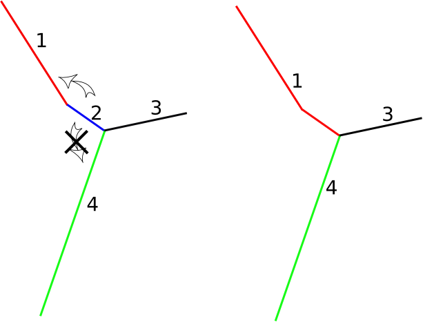
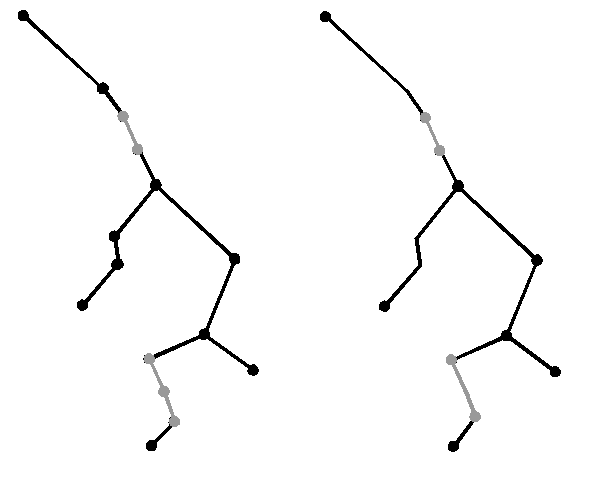

NAME
m.disline - dissolving small linear entities
KEYWORDS
vector, line, dissolve
SYNOPSIS
m.disline
m.disline help
m.disline [-i] input=name output=name length=float [unit=string] [columnp=string] [valuep=string] [--overwrite] [--verbose] [--quiet]
Flags:
- -i
- print only statistics (no calcul) and exit
- --overwrite
- Allow output files to overwrite existing files
- --verbose
- Verbose module output
- --quiet
- Quiet module output
Parameters:
- input=name
- Input vector name
- output=name
- Output vector name
- length=float
- min length value
- unit=string
- units (meters(me), kilometers(k))
- Options: me,k
- Default: me
- columnp=string
- Name of column used to treat particular entities (column must exist)
- valuep=string
- value used in 'columnp' to identify the particular entities
DESCRIPTION
m.disline allows the user to dissolve small linear entities with user's threshold (length parameter). Flag i prints only statistics (see Examples for details). Columnp and valuep can be used to treat separately particular entities (e.g. pipe entities can be dissolve only with pipe entities), see Examples for details.
NOTES
Dangle segments are removed (as in v.clean tool=rmdangle command).
Confluence integrity is preserved : in the following example,
on the left figure, in the input layer, length of the segment 2 is under the
user's threshold and should be merged on segment 4 which is its longest
neighbour. But in order to preserve geometry confluence, segment 2 is
merged on segment 1, as seen on the right figure in the output layer.
|

|
|
Input layer (left) ; Output layer (right)
|
EXAMPLES
Print Statistics
Print Statistics for dissolving linear entities for the line1 vector map (threshold is 200 meters)
GRASS 6.3.0 :~ > m.disline -i input=line1 output=line2 length=200 unit=me
You choose a minimum length of 200 m
For the vector line1,
the dissolving small linear entities operation will work
on 8 lines for 32 total lines
and will represent 3.5 % of the total length
Dissolving linear entities
Dissolving linear entities for the line1 vector map (threshold is 200 meters)
GRASS 6.3.0 :~ > m.disline input=line1 output=line2 length=200 unit=me
Particular entities treatment
Dissolving small linear entities
for the network1 vector map (threshold is 100 meters) and separate
treatment for particular entities defined by the column 'type' and the value 'pipe'
GRASS 6.3.0 :~ > m.disline input=network1 output=network2 length=100 unit=me columnp=type valuep=pipe
|

|
|
Input network1 layer (left) ; Output network2 layer (right)
|
SEE ALSO
m.dispolyg, m.network, m.segline, m.snaplp
AUTHORS
Michael Rabotin, UMR LISAH, Montpellier, France
rabotin@supagro.inra.fr
Last Changed: 23 January 2012
Main index
Copyright UMR LISAH OpenFluid